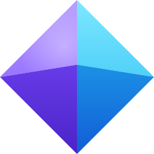

Site de WinluxDémonstration Une simulation du bureau dans votre navigateur, pas Winlux en train de tourner. Rien n'est téléchargé ni envoyé.
Winlux est un logiciel libre indépendant. Il n'est ni affilié à Microsoft ni approuvé par Microsoft ; Windows est une marque de son propriétaire, citée ici uniquement pour décrire la compatibilité avec les programmes .exe.
Winlux is independent free software. It is neither affiliated with nor endorsed by Microsoft; Windows is a trademark of its owner, named here only to describe compatibility with .exe programs.
Winlux ist unabhängige freie Software. Es ist weder mit Microsoft verbunden noch von Microsoft unterstützt; Windows ist eine Marke ihres Inhabers und wird hier nur genannt, um die Kompatibilität mit .exe-Programmen zu beschreiben.
Winlux es software libre independiente. No está afiliado a Microsoft ni cuenta con su aprobación; Windows es una marca de su propietario, citada aquí solo para describir la compatibilidad con los programas .exe.